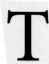

 his chapter outlines a method for analyzing horary charts derived from the astrological literature and my own experience with horary charts. The remaining chapters will flesh out this outline and add further details from the horary literature. To illustrate the technique we will again consider the chart for Sara's baby from Chapter One. Next we will review a less serious question of Sara's which shows a variation on the horary theme. This chapter concludes with three event charts-the October 1989 San Francisco earthquake, the May 1996 Everglades crash of ValuJet Flight 592, and finally the explosion of TWA Flight 800-to show how horary methods can aid in event analysis.
My approach resembles but also differs from the methods of the astrologers from whom I learned horary. I have tried all the rules and included them here only if I have examined actual horary charts in which the rules proved reliable. The exceptions are those rules or conditions which have not appeared in my own charts but which other astrologers have documented with convincing case examples. I continually turn to Lilly when I get stuck on a chart, but Marc Edmund Jones is the writer who most fundamentally influenced my thinking. What attracted me to Jones was the way he thought about doing horary. Jones advised his students to learn basic principles first. The difficult aspects of the subject then follow naturally. If the students master the fundamentals, they don't need to memorize trivial facts. By understanding the basics, they can avoid blindly following rules they do not understand solely on the authority of the ancients. Like Jones, my goal in writing this book is to teach the reader to think like a horary astrologer.
Marc Edmund Jones accepted the idea of cosmic sympathy, the philosophical heart of astrology. Life is organic. A concordance exists between the changing relationships of the planets and the workings of the human mind. For Jones, the horary chart puts the astrologer in touch with a significant moment in the life of a person. The horary figure is a snapshot of a focal point for the querent in the space and time. It captures the essential qualities of that moment when the querent conveys to the astrologer a need to put his difficulty into cosmic perspective.
Jones taught that everything in horary astrology "depends, fundamentally, upon the correct selection of a pertinent point of experience in time and space, as the basis for analysis." This tenet raises a practical question: how do you recognize the proper time and place to cast the chart? Some astrologers say you must use the time and location of the person who asks the question. They argue that this approach gives the querent control over the matter.
Giving querents control over their lives is a noble ideal, but Jones takes a different tack. Because the querent has struggled with the problem for some time, Jones argues that what makes the moment significant is the very act of consulting an outside expert-the horary astrologer. The horary chart maps the point at which these two minds meet in space and time. In taking this position, Jones is following a centuries-old tradition. The medieval astrologer Guido Bonatus advised horary artists to consider "in what climate thou [the astrologer] receivest the question, for judgment must be varied as the ascensions of countries and climates differ." William Lilly also followed this method. Like Lilly and Jones, I also use the location of the astrologer and the time when the astrologer first understands the question as the proper point in space-time to cast the chart.
Jones' approach captures the spirit of Lilly's advice that "if a person apply to an astrologer, the figure must be taken for the exact time he first speaks on the subject; or, if it be by letter, when it is first read and understood by the artist." The moment that the astrologer understands the question is the time to cast the chart. The astrologer's effort to penetrate the querent's concern converts an ordinary question into a horary one. Again, to quote Jones: "The hour and minute when the astrologer understands the situation is the point of impact on his consciousness, and is the proper basis for the astrological wheel he will employ in suggesting a solution for any difficulty." Another way to arrive at the same conclusion is to view the horary chart as a horoscope cast for the birth of an idea.
What if the astrologer asks herself or himself a horary question? In this case, Jones says the correct time to cast the chart is "when an individual first realizes that a given matter, or phase of the matter is critical." It may be the time when the astrologer notices a "welling up in consciousness of an overlooked or hitherto unsuspected consideration," or the moment when he or she decides to do a horary analysis.
William Lilly, for instance, asked himself a question about whether to buy the houses of Mr. B. As both querent and astrologer, Lilly cast the chart for the time he found his mind "most perplexed and solicitous about it." Lilly loved the house and couldn't wait to buy it. If you study his analysis of the chart, you will find that he appears to have fudged part of the interpretation to make it come out the way he wanted. Though generally correct in his interpretation, some of Lilly's analysis is an exercise in astrological legerdemain. It's hard to remain objective when acting as your own astrologer. I will review the houses of Mr. B. in a later chapter.
Lilly advised that the proper time to cast a chart is "when you feel most anxious about any matter, and first form a resolution to erect a figure on the subject." Such a chart will reflect your mind's attempt to solve the problem. For fans of Star Trek's Mr. Spock, the horary chart is like a Vulcan mind-meld with the universe. To quote Jones again, "What a horary chart measures is the contents of a given mind." Jones borrowed this idea from C. C. Zain (1931) who stated that the horary chart "pictures the relation of the various mental factors within the unconscious mind of the person asking the question." Zain believed that the horary chart mapped "three distinct, but sympathetically related, things" First, the chart shows the positions of the planets at the time the querent first clearly formulated the question. Second, the chart shows the simultaneous mental factors within the mind of the querent. And, finally, the chart reveals the various factors that comprise the matter at hand.
Equating a horary chart with the contents of a human mind allows a more fundamental understanding of the "considerations before judgment." Some modern astrologers refer to these as "strictures against judgment" because they advise us to proceed with caution in reading the chart. Classical horary astrology paid special attention to four considerations before judgment that, if present, warn that the chart might not be "radical" or "fit to be judged." Jones maintained that these warnings (strictures, considerations) exist because "intelligence must have a mechanism for protecting itself against its own wishful thinking." In other words, a "stricture" or a "consideration before judgment," having the nature of Saturn, protects us from self-deception and compels us to face reality.
According to Jones, if such a warning appears in a horary chart, the conscious mind may have chosen the incorrect moment as judged "from some deeper frame of reference." Some hidden factor, or some more profound consideration that currently eludes the querent's awareness, may play a role in the question. In such cases the astrologer will have to tell the querent that the chart may not be able to answer the question as stated because some more basic matter is at issue. Judicious discussion with the querent may then produce a more suitable horary question, one more conducive to the resolution of the crisis and the personal growth of the querent.
AN OUTLINE FOR HORARY ANALYSIS
Now let me present the method I typically follow in horary analysis. These steps are offered as guidelines rather than rigid rules to follow. I cannot agree more strongly with Marc Edmund Jones that "the wise investigator of horary art will ultimately set up his own rules and standards" This statement may dismay the beginning horary astrologer, but I believe it to be a sound approach to the art. If you meet the Buddha on the road, kill him.
Some charts require a departure from this method and a measure of creativity on the part of the astrologer. Every chart is unique and no one method can cover all contingencies. One must learn to think like a horary astrologer to be able to deal with questions that deviate from the norm. As Emerson said, "A foolish consistency is the hobgoblin of little minds."
Keep Accurate Records
Keep a notebook to record all your horary questions, their horoscope charts, and their outcomes. Review your notebook regularly. Pay special attention to your mistakes, because your errors will teach you the most about horary. Lilly followed this method to become a master of the art. He advised all beginners to "first write down their judgments on each figure at full length, and afterwards contract their opinions into a narrow compass." Lilly added, "It is well to enter every figure in a book for farther reference, and to remark and register such things as have occurred according to their predictions or otherwise; by which they will be able to correct their future judgments."
Always record the querent's question verbatim. Be sure to write down your own understanding of the question if it differs from or clarifies that of the querent. Note the date and time, whether A.M. or P.M., standard or daylight savings time, the location and coordinates, and the day of the week. Don't forget the A.M. and P.M.-this is a common omission.
Horary astrologers who use Lilly's technique should also note the planetary hour of the question as a test of the validity of the chart. For example, the hour ruler should agree with the Ascendant in specific ways (more about this in a later chapter).
Cast the Chart
I erect the figure for the time and place where I first understand the question. You may wish to experiment with charts erected both for your location and for that of the querent. If the querent's coordinates prove more reliable, by all means use them. I am too self-centered to use someone else's coordinates, and, besides, my mind does not function that way. I'm sure, however, that if Mother Teresa were to do horary, she would use the other person's coordinates to erect the figure and get good results. In the modern world with our ability to talk by phone simultaneously over great distances, a relationship chart cast for the midpoint in space and time between the astrologer and the client may also produce a valid horary figure.
Nowadays most astrologers rely on a computer. I tend to use the Koch or Regiomontanus house systems unless I am studying someone else's chart already cast in a different system. I decided to use Koch in all my work because astrologers whom I respect, like Robert Hand, use the Koch system and it has proven reliable in practice. Lilly used Regiomontanus, and students of classical horary will want to follow his example. Placidus is also popular. Each practitioner should experiment with different methods of house division and use the one that best fits how his or her mind functions. Leave it up to the universe to bring you the questions that match your system. Forcing yourself on the cosmos (or on other people, for that matter) rarely works out.
Eyeball the Chart for Validity, Descriptiveness, and "Fit"
The Sun tells the time. Is the Sun in the proper house for the time of day? The Sun rises at the Ascendant, peaks at the MC at noon, sets at the Descendant, and is at the IC at midnight. If the Sun is in the 3rd house, it's between midnight and about 2 A.M. when the bars are closing in many localities. Except for inebriates, not many people ask horary questions at this hour. Occasionally an intoxicated person will call when the Sun is in the 3rd house (transportation) to ask for help in finding his car. Only a fool would take such a call. Besides, it would be unethical to help a person drive while drunk.
See if the chart "fits" the querent and the question. The chart must tell the story to be valid. This is a test for "radicality." You can judge "fit" by answering the following questions.
• Does the Ascendant describe the querent and the situation? Lilly was a stickler for insisting that the Ascendant and its ruler physically describe the querent before proceeding with his analysis of the chart.
• Do the houses or the signs of the lights (Sun and Moon) have some bearing on the matter at hand? Do the houses of the lights, those with Cancer and Leo on their cusps, pertain to the issue? The house placement of the Moon, in particular, frequently bears a direct relation to the question on the querent's mind. The moon shows where the mind is.
• Does the most recent past major aspect made by the Moon reflect some recent event in the life of the querent? Does the planet the Moon last conjoined describe the general tone of the situation?
For example, my former editor Tom at Llewellyn asked a horary question about a manuscript that was giving him difficulty. The Moon's most recent past aspect was a square to Mercury, having occurred in the last two hours. Mercury represents manuscripts and the square from the Moon accurately described the frustration he was feeling with the written material (not this text, of course). Mercury and the 3rd house also rule comings and goings, and Tom was feeling overwhelmed by a move to a new office building.
Something more remarkable occurred in connection with Tom's question. Just as he finished stating the question, someone walked into his new office to tell him that a car had smashed into the building that he just moved out of. Mercury rules cars and transport, and the square from the Moon also signifies a transportation accident before the time of the question.
Back to determining fit. If a classical consideration before judgment is present, does it describe the querent or some fundamental aspect of the situation? Does it warn you that a different question is on the querent's mind? Is the querent sincere and in genuine need of an answer? Just what does it tell you about the matter?
If most or all of the above hold true, then the chart is most likely valid, "radical," or fit to be judged. The basic principle is that the astrological symbolism must match the conditions surrounding the question. The chart must tell the story. Some astrologers refer to a chart that "fits" as bearing the signature of the horary question.
Check the Considerations Before Judgment
Are any of the classical considerations present? If so, do they describe the situation or the querent, and thereby render the chart radical? In a later chapter I will present a chart for the question "Will Mayor Ed Koch win the primary?" to illustrate this point. Some of the classical considerations are:
• Less than three degrees, or more than twenty-seven degrees rising. Less than three degrees rising implies a very new or premature question. It may be too early to tell, especially if the rising sign is one of short ascension (Capricorn, Aquarius, Pisces, Aries, Taurus, or Gemini for charts north of the equator). For a matter in its inception, an early Ascendant may perfectly describe the situation.
More than twenty-seven degrees implies that the question may be too late. The querent is perhaps undergoing a change of circumstance at the time of the question. The querent may have turned to the astrologer as a last resort after seeking counsel from numerous others. If a late Ascendant matches the querent's age, it may be simply describing the querent. If a planet from the querent's natal chart conjoins the Ascendant (within one degree), this may also be an indication of a radical chart and an important matter for the querent.
• Moon in the Via Combusta (15° Libra to 15° Scorpio). The "burning way" or "combust path" is a malefic and unpredictable burning influence of the nature of Mars, Saturn, and Uranus. It often refers to matters of illness, damage, danger, fear, confinement, or death. It can literally refer to burning as from a fever or in a fire.
• A Void of Course Moon. The modern definition is that the Moon is void of course when it will not complete (perfect) any major aspects before leaving its current sign. Lilly defined the Moon as being void on its course when it travels without being in orb of applying to a major aspect with any other planet. Nothing functions when the Moon is void of course. Matters seldom go handsomely forward. Some astrologers believe that because nothing will come of the matter, there may be nothing to worry about, or little the querent can do to alter the situation.
If void of course, is the Moon in Cancer, Taurus, Sagittarius, or Pisces? According to Lilly, the Moon is able to perform when void in these signs. Lilly took this rule from Guido Bonatus' aphorism #64, which relates to the Moon occupying the signs of dignity of the benefic planets, Venus and Jupiter.
If the Moon is void of course, do the significators apply to a major aspect before the Moon leaves its sign? Is this aspect strong enough to overcome the void of course Moon?
• Moon in late degrees. Lilly says that the Moon in the last degrees of a sign, especially Gemini (the fall of Jupiter), Scorpio (the home of Mars), or Capricorn (the home of Saturn) may render a chart unsafe to judge. The last degrees of signs are the terms (an essential dignity) of the malefics.
• Saturn in the 7th. Does Saturn lie in the 7th house and thereby restrict the astrologer? Some modern astrologers believe that Pluto in the 7th house acts like Saturn. Is the ruler of the 7th house, which signifies the astrologer, afflicted?
Locate the Question and Identify the Significators and Natural Rulers of the Matter
Locating the question is the crux of horary analysis. One must understand what the twelve mundane houses mean and how they functionally relate to the querent. Always remember that rulerships depend on the role the matter plays in the life of the querent and not simply on a word you look up in a dictionary. Rulership lists can be useful in prodding your mind to come to the right conclusion, but such lists act more like a thesaurus than a dictionary. It helps to list all the ruling planets systematically so you won't neglect important information in the chart.
• What planet or planets rule the querent? In traditional horary astrology, the planets that signify the querent are the rulers of the Ascendant, the Almuten(s) of the Ascendant, the rulers of any sign intercepted in the 1st house, and any planets occupying the 1st house. When there is more than one planetary significator, the planet that best describes the querent should be considered primary.
The Moon always co-rules the querent, but the Moon is a primary ruler of the querent only when Cancer is on the Ascendant or when the chart demands the Moon must represent the quesited rather than the querent. Bonatus also used the planet the Moon last aspected as a co-ruler of the querent.
The Almuten of a house is the planet that has the most essential dignity at the cusp of that house. The Almuten of the Ascendant and of the quesited's house may be primary significators, especially if they are stronger than the rulers of those houses. More about this in a later chapter.
• What planet or planets rule the quesited? The quesited is the matter or person inquired about. The quesited's significators are the ruler of the sign on the cusp of the focal house, the Almuten of the cusp of the focal house, the ruler of any sign intercepted in the focal house, and any planets in that house. The planet ruling the focal cusp is usually the primary significator. Bonatus also used the planet which the Moon will next aspect as a co-ruler of the quesited. He viewed the Moon, by aspect, as having last aspected the planet signifying the querent and as next aspecting the planet representing the quesited. In addition, each matter usually has a natural planetary significator (Venus for love, Mercury for writing, etc.). When there is more than one planetary significator, the planet that best describes the quesited should be taken as primary.
• Derived houses. It is often necessary to use derived houses when the querent asks a question about someone else. Sara's question about her baby is a good example. Sara's inquiry was not about herself, which would be a first house matter. Instead, Sara asked about the baby, a 5th house matter, and about the baby's health, a 10th house (sixth from the fifth) issue. We had to use derivative houses to answer Sara's question.
• What is the natural ruler of the matter at hand? Most issues have a natural planetary ruler. I will review the meanings of the planets in detail later in the book. See Table 1 (page 16) for some of the common natural rulerships of the planets. Understanding the nature of the planets is essential for determining the natural rulers of each matter. Sometimes the natural ruler will answer the question when the house cusps do not. In addition, natural rulers will confirm the answer given by the houses.
• What house in the chart most clearly focuses the matter? This is important for locating the question and for the Jones' house-and-its-opposite technique. According to Jones, the aspect between the planet ruling the focal house and the planet ruling its opposite should give the answer to the horary question. In practice I have not found this rule to be reliable, but the reader may wish to experiment with Jones' technique. Table 2 (pages 17-18) covers some of the common matters ruled by the houses.
Table 1: Some Rulerships of the Planets
SUN: Authority, officials, life force, health, success, men, prominent people, superiors, employers, executives, illumination, power, ego, persons worthy of trust, men ages thirtyfive to forty-five.
MOON: Mother, women in general, the public, moods, fluctuations, changes, feelings, receptivity, liquids, fugitives, runaways, short trips, removals, lost objects, things connected with liquids or the sea.
MERCURY: Writing, communication, transport, books, letters, messages, questions, buying and selling, contracts, bargaining, trips, travels, neighbors, literary or intellectual activity, young people, students, office workers, secretaries, salespersons, tradespersons, tricksters.
VENUS (the lesser benefic): Love, gifts, money, harmony, alliances, relationships, marriage, values, resources, movable goods, lost objects, social affairs, young women, the mother, wife, pleasures, the arts, luxury items.
MARS (the lesser malefic): Sex, war, aggression, energy, haste, combat, butchers, surgeons, cuts, assertiveness, leadership, weapons, fire, iron, accidents, quarrels, danger, injury, men ages twenty-five to thirty-five.
JUPITER (the greater benefic): Expansion, good fortune, luck, higher education, abundance, long journeys, prophecy, gambling, success, professionals, the wealthy, lawyers, judges, horses, foreigners, middle-aged men.
SATURN (the greater malefic): Obstacles, limitations, loss, restrictions, gravity, falls, seriousness, hardness, delays, aging, old people, debts, poverty, real estate, construction, time, inertia, austerity, tribulations, karma, death, loneliness, solitary people, plumbers, the father.
URANUS: Breaks, accidents, separations, divorce, surprises, awakenings, electricity, the New Age, strikes; according to Barbara Watters: "sudden, unpredictable, violent, or fateful" events.
NEPTUNE: Dissolution, confusion, absentmindedness, spirituality, lack of clarity, fog, undoing, drugs, alcohol, deception, poetry, illusion, unreality, mysticism, seclusion.
PLUTO: Powerful forces, sexuality, penetration, the underworld, rebirth, transformation, transition, the unconscious, death, and Barclay adds "ejection."
PARS FORTUNA (a point, not a planet): Money, income, possessions, lost objects, good luck, substance, treasure.
Table 2: Some Matters Ruled by the Houses
1ST HOUSE: The querent, a missing person unrelated to the querent, the self, health, length of life, physical description of the querent, the body, the head, appearance, disposition, personality, new arrivals, beginnings, accidents, condition of a vehicle, new projects, personal interests, initiative, efforts to get ahead. The joy of Mercury.
2ND HOUSE: Substance, resources, movable goods, lost objects, money, income, values, personal worth, possessions, potential wealth or poverty.
3RD HOUSE: Communication, news, siblings, neighbors, neighborhood, elementary education, close kin or relations, cousins (generically), visits, short trips, cars, roads, studies, writing, letters, messages, teachers, mail carriers, reports, rumors, gossip. The joy of the Moon.
4TH HOUSE: Father, home, family, domestic issues, end of the matter, lost and recovered wealth, buried treasure, foundations, security, land, real estate, buildings, non-movable goods, houses, farms, wells, mines, resources of the earth, ancestry, old age, elders, the grave.
5TH HOUSE: Children, creative self-expression, hobbies, speculation, gambling, lotto, stocks, risk-taking, excitement, contests, elections, recreation, fun, recreational sex, love affairs, romance, pregnancy, pleasure, feasts, entertainment, education, agents of the querent, ambassadors, the father's movable goods. The joy of Venus.
6TH HOUSE: Illness, sickness, tedious jobs, drudgery, detailed work, coworkers, pets, small animals ("up to the size of a goat"), servants, employees, service, appliances, paternal aunts and uncles, lodgers, tenants, everyday duties, food, hygiene, climate control, adjustments for proper functioning, toil, healing and healers. The joy of Mars.
7TH HOUSE: The mate, partner, spouse, significant other, a person with whom the querent has dealings but whose relation is not specified by another house, opponent, competitor, open enemy, rival, astrologer of the querent, any personal counselor or advisor, thief, runaway, fugitive, sibling's children, marriage, partnerships, divorce, lawsuits, place you would remove to, legal contracts and agreements, dealings with the public.
8TH HOUSE: Death, procreative sex, surgery, injury, transformation, rebirth, restructuring, other people's money, other people's movable goods, psychoanalysis, the occult, penetration, probing, refuse, taxes, debts, mortgages, loans, money owed to the querent, insurance, joint money, wills, gifts from others, legacies, estate of the deceased, investigation, the personal unconscious.
9TH HOUSE: Long-distance travel or interests, foreign countries and people, in-laws, higher education, lecturing, religion, clergy, the church, philosophy, prophecy, forecasting, horary astrology, publishing, broadcasting, advertising, professional classes, insurance adjusters, voyages, legalizing ceremonies, the court system, lawyers, the law, weddings, science, systematic organized thought, divination, dreams and visions, legal proceedings, exploration. The joy of the Sun.
Table 2 (continued): Some Matters Ruled by the Houses
10TH HOUSE: Mother, authority, superiors, the boss, the government, structure, career, profession, employer, monarch, ruler, president, judge, executive, promotions, fame, rank, honor, status, success, achievement, credit, reputation, prestige, public office, officials, career moves, important jobs, employment, worldly position. The Sun and Jupiter do well here.
11TH HOUSE: Friends, groups, clubs, socializing, counseling, relationship with humanity, unbonded relationships, legislators, legislation, hopes and wishes, ambition, comfort, relief, praise, trust, income from career, resources of the person in authority, the mother's movable goods, humanitarian activities; according to Bruce Scofield, one's business clients.
12TH HOUSE: Seclusion, undoing, personal failings, hospitalization, confinement, jail, bondage, prisoners, captives, slaves, restriction, fears, punishment, self-undoing, the collective unconscious, widowhood, institutions, retreats, clandestine affairs, secret dealings, secrets, poetry, drugs and alcohol, invalids, maternal aunts and uncles, sorrows, unseen dangers, disappointments, hidden limitations, suicide, murder, assassination, charity, animals (larger than a goat). The joy of Saturn.
Identify the Major Positive or Negative Indicators
I find these fixed stars and degrees helpful to consider, using a one-degree orb.
• The malefic degree Serpentis (19° Scorpio) conjunct a significant planet or point. Serpentis is considered very destructive by some, but I have seen charts with a prominent Serpentis where everything worked out fine. Use this with caution.
• Caput Algol, at 26° 10' Taurus in the year 2000. Quite malefic. Losing one's head. Danger of fire. Beware if Algol is prominent in a chart.
• Spica at 23° 50' Libra in the year 2000. Extremely benefic. Success.
• Saturn retrograde in the 1st house. Retrograde Saturn in the 1st may destroy the question or confirm a negative outcome. A lost object may return in damaged condition. A strong chart can overcome this so don't take it as an absolute.
• Alcyone of the Pleiades, just entering 0° 00' Gemini in the year 2000. The weeping sisters give you something to cry about.
• Part of Fortune conjunct a significant planet or point. Quite benefic. Good financially.
• Nodal Degrees. Significant planets or points in any sign in the same degree (regardless of minutes) as the Moon's Mean Nodes. A Nodal Degree suggests the workings of fate-the matter is out of the querent's hands. For example, the Ascendant of the chart for epicenter of the October 1989 San Francisco earthquake is in the same degree as the Moon's Mean Nodes but in a different sign.
Determine the Cosmic State (Planetary Standing) of the Significators
Are they strong or weak? Is my daddy bigger than your daddy? Consider whether they are:
• Besieged
• Peregrine
• Combust the sun
• Under the sunbeams
• Cazimi
.Intercepted
• In fall or detriment (debility)
• Afflicted by a malefic
• Angular
• Accidentally dignified by house
• Swift in motion
• Stationary or Retrograde
• Conjunction with fixed stars
• Conjunctions with antiscions or contrascions of significators
• In aspect with a relevant Arabic Part
• Other considerations
The literature tells of dozens of such considerations that affect planetary strength. In a later chapter I will discuss a handful of modifying factors that make theoretical sense or seem to have empirical justification.
Consider the Aspects the Significators Form Among Themselves
According to Jones, "The first aspect made by a significant planet is the normal basis of judgment." The planets are the players, the aspects the script, the signs the costumes, and the houses the fields of action. Think of the planets concretely as people or things inquired about. The applying aspects tell you how they will behave toward one another. Like Santa Claus, the astrologer-by considering planetary strengths and aspects-"sees if you are sleeping, he sees if you're awake, he sees if you've been bad or good," etc. Here are some of the factors:
• No aspect, no action.
• If there is no applying aspect, check for translation and collection of light.
• Sextile or trine: A positive relationship.
• Square or opposition: A negative relationship.
• Squares: Obstacles and frustration.
• Oppositions: Separation and opposing forces.
• Conjunctions: A coming together. Can be positive or negative depending on the planets involved.
• Mutual receptions: quite helpful, a way out.
• List minor aspects, including quincunxes. I use one-degree orbs for minor aspects.
• Quincunxes imply necessary adjustment or reorganization.
• Quincunxes often relate to 6th and 8th house issues, or imply that something is out of joint.
• Semi-squares (45°) and sesqui-quadrates (135°) act like baby squares and cause irritations and annoyances.
• A semi-sextile (30°) with mutual reception can be quite positive.
• What is the first major aspect to occur between significators? This first aspect usually determines the outcome of the matter. Other aspects may contribute to or modify the answer given by the first one.
• What do the aspects mean in this unique chart?
• What answer would you give to the question based on these aspects? Do weak significators hinder the action promised by the aspect?
Cross-check the Basis of the Judgment
As in the rest of astrology, you should confirm your interpretation in more than one way to be sure of your answer. If you find three or more indications of the same judgment, you can be confident you have a correct interpretation. Contradictory indications in a chart may mean that the querent was confused, did not ask the question really on his or her mind, or selected the wrong place and time to seek horary advice. It may also mean the matter is too complicated to give an adequate answer on the basis of the horary chart. Idle or trivial questions produce muddled charts.
It often helps to consider the 4th house as the end of the matter. The 11th house represents the querent's hopes, and a fortunate aspect between the Ascendant ruler and the 11th ruler suggests a positive outcome. Positive aspects between significators and relevant house cusps can also support other indications in a chart.
There are also many secondary methods that give confirmation. The most popular are the Arabic Parts and Significant Degrees, the Fixed Stars, and the Antiscions or Solstice Points. I will devote a full chapter to these ancillary methods.
Identify the Modality of the Cross that Appears on the Angles
If mixed, state the mix. Cardinal signs act quickly and assertively. Fixed signs are stubborn and entrenched. Mutable signs are flexible, adaptable, and often unstable. Sara's baby's chart has mutable angles, suggesting some instability in the situation. Mixed crosses start one way and end another.
Consider Special Factors that Might Affect the Judgment
Are any of the following present? If so, how do they affect your answer? Do they confirm other findings in the chart? (I will discuss these further in another chapter.)
• Parallels or contraparallels of declination between significators
• Refranation
• Hindrance, frustration, or impedition
• Fixed stars; Arabic parts; retrograde Mercury
• Critical degrees
• Moon conjunct sun
• Moon sextile or trine Sun without frustration
• Collection of light
• Solstice points (Antiscions) and Contrascions
• Planets or points rising in the 1st house
• Midpoint contacts
Check All of the Aspects Made by the Moon
The Moon's most recent aspect before the question shows an event recently past. According to Bonatus, the planet most recently aspected by the Moon (major aspects only) is a co-ruler of the querent. The Moon's most recent conjunction before the question colors the nature of the Moon. All the aspects the Moon will make before leaving its sign show how the circumstances will progress and give a global view of the future of the situation. Bonatus uses the planet the Moon next aspects (Ptolemaic aspects only) after the question as a co-ruler of the quesited. The Moon's final aspect shows in a general way how matters will end.
You can answer most questions by following the above sequence of steps. The remaining chapters will clarify the more obscure parts of this outline. I will now present three cases to illustrate this method of analysis.
THREE CASE STUDIES: PRINCIPLES IN ACTION
Case One: Sara's Baby
This is the same example referred to in Chapter One. My friend Sara was worried about her pregnancy and asked this question on a Thursday, a Jupiter day. The chart was done using Placidus houses. Sara asked me to cast a chart to determine the health of the baby. I spent time with her explaining the nature of horary astrology. During this time I was aware of her concern, but she had not yet formulated it as a horary question. There came a point in our discussion at which she said, "Okay, I'm ready to ask a question. Is this baby healthy?" Only then did I check the clock for an accurate time. At that moment I knew that she understood what horary could do and I understood the meaning of her question. Such a discussion with a client is a useful way to formulate the question and select the proper time to cast the chart. See Chart One on page 22.
Eyeballing Sara's chart to check for validity and fit, we see that the Sun is at the beginning of the 6th house, as it should be at 8:30 P.M. A 6th house Sun suggests a question about health or work. Mercury (natural ruler of questions) is in the 5th house of children. The Moon is in the 10th house of career and the health of children. Cancer is on the 5th house cusp of children, and Leo governs the 6th house of health. The chart fits the question. It would also "fit" a question about some speculative or creative activity involving work or career.
The Ascendant rules the querent. With Pisces ascending, Jupiter and Neptune rule Sara. With Jupiter in the 1st house, again this planet rules Sara. Aries is intercepted in the 1st house and so Mars also rules Sara. This is a night chart, making Mars Almuten (most essentially dignified planet) at the 20° Pisces Ascendant.
Because the question is about Sara's baby, we must use derivative houses. The 5th house governs pregnancy and children. Cancer is on the 5th cusp, making the Moon ruler of the baby. In addition, Venus and Mercury occupy the 5th house and become co-rulers of the baby. The Moon is also Almuten of the 5th house.
What house rules the baby's health? The 6th of any house governs the sickness of that house. The 6th of the 5th house is the 10th house of the figure. Sagittarius is on the cusp of the 10th, so Jupiter rules the baby's state of health. Jupiter is also Almuten of the 10th. Neptune and the Moon are in the 10th and they become co-rulers of the baby's health. No classical considerations before judgment exist. An intercepted Jupiter in the first house describes the querent because the first house represents Sara's body and Jupiter shows the fetus growing in her womb (intercepted). The chart is radical and fit to judge.
Chart 1: Sara's Question About her Baby's Health August 6, 1987, 9:30 PM EDT, 73W01, 41 N19 Placidus Houses
This chart emphasizes Jupiter because Jupiter governs the day (Thursday) and rules both Sara and the baby's health. What is the cosmic state of Jupiter? Mixed. Its placement in first house Aries strengthens it. But an interception in Aries weakens Jupiter, and its placement in the impatient 29th degree of a cardinal sign shows a crisis about to break. Jupiter is also in the terms of Saturn in Aries, another negative influence.
Since Sagittarius is on the 10th cusp (where Jupiter rules and is Almuten), Jupiter is the primary ruler of the baby's health. With Cancer on the 5th cusp (where the Moon rules and is Almuten), the Moon is the primary significator of the baby. The Moon's last aspect before changing sign will be a square to Jupiter, suggesting a negative outcome. The aspect between the primary rulers says, "No, the baby is not healthy."
Because of the gravity of the question, we should confirm this negative conclusion. The baby's 4th house is the 8th house of the chart. Scorpio is on the 8th cusp and Pluto occupying Scorpio in the 8th shows the end of the matter for the baby. The 8th house of the radical figure is Sara's house of death. The ruler of the baby's end in Sara's house of death is ominous. The co-ruler of the baby, Mercury, will shortly square Pluto, again suggesting death.
If we consider the Jones' house-and-its-opposite method, the 5th house rules the pregnancy and its opposite house, the 11th, rules the immediate outcome. The Moon governs the 5th house and Saturn, the 11th. The Moon and Saturn are applying mutually to a semisextile, which is an unfavorable aspect in matters of health.
In matters this serious, we would look for as much confirmation as possible before predicting death. Arabic parts, fixed stars, and solstice points are useful for further confirmation. The Part of Death has this formula: (Longitude of Ascendant) + (Longitude on 8th cusp)-(Longitude of Moon). In this chart the Part of Death is at 14° 41' Sagittarius and is almost exactly conjunct retrograde Saturn at 14° 39' Sagittarius. If I had used a different house system, the Part of Death would have different coordinates.
Recall that Saturn rules Jupiter by term and Jupiter rules the baby's health. This connection places the health of the baby in contact with the Part of Death. With Capricorn on the 11th cusp, Saturn governs Sara's hopes and wishes and joins them to the Part of Death. With Aquarius on the 12th cusp, Saturn and Uranus rule Sara's sorrow. Saturn also rules the death of the baby because the natural 12th is the 8th house of death for the 5th house child. Saturn's placement on the Part of Death confirms the death of the baby, the mother's sorrow, and the demise of her hopes and wishes.
In addition, Saturn rules the immediate outcome of the pregnancy and is dispositor of the Moon, which rules the baby and the pregnancy. Saturn's conjunction with the Part of Death again shows that the pregnancy will end in the death of the fetus. We see another confirmation in the solstice point of Mercury, co-ruler of the baby. Solstice points often represent turning points in the life of the querent. Mercury is at 0° 19' Leo and its solstice point is 29° 41' Taurus, conjunct the fixed star Alcyone of the Pleiades, the weeping sisters. This pregnancy is a turning point in Sara's life and will cause her to weep.
CHART 2: "WHAT HAPPENED IN THE PAST TWO WEEKS?"
As a counterpoint to the previous example, I will present another question of Sara's, one with a lighter touch. I live in Connecticut and Sara lives in New York City. My wife and I are close friends with Sara and her husband, and we visit each other frequently. On Thursday, October 5,1989, my wife telephoned Sara to plan a visit with her in New York on Saturday. Sara asked to speak to me because she had a horary question.
When I picked up the phone, Sara said in a flat voice, "I'm talking like this because I don't want to give anything away. Something happened in the past two weeks. Can you do a chart to tell me what it is?" I accepted the challenge and noted the exact time: 10:39 P.M. EDT. I cast Chart 2A for this time. I understood her question to be, "What is my question?" It was Thursday, a Jupiter day. Sara, a native of Sagittarius, seems to have a liking for Jupiter days. I didn't have time to look at the chart Thursday evening. I also had a busy day on Friday, and it didn't occur to me until late that evening that I hadn't looked at Sara's question. I wanted to get it done before Saturday morning, when we planned to be in New York.
Actually what happened was that Friday evening I suddenly felt compelled to study Sara's chart. I noted the time. It was 10:53 P.M. EDT on October 6,1989. This urge was so strong that I decided to look at a chart for that moment as well. I set Chart 2B for the time of my urge to read her chart and discover its secret. It was on Friday, a Venus day. I turned on the computer and ran off both charts. I was immediately struck by the remarkable similarity between them.
Chart 2A: "What happened in the past two weeks?" October 5, 1989, 10:39 PM EDT, 73W01, 41 N19 Koch Houses
In looking at Chart 2A, I decided that it had to be good news because Jupiter was rising in the first house and the question came on a Jupiter day. Some financial gain possibly. The Moon's most recent conjunction to Venus would confirm this. Did she win Lotto? Then I remembered her old chart with Jupiter in the first. Could she be pregnant again? That would be truly Jupiterian. In addition, Jupiter rules the 6th house of work and service in this chart. Maybe she came into money related to her work.
I next looked at the positions of the Sun, Moon, Mercury, Leo, and Cancer, to get a general sense of the "fit" of the chart. The Sun in the 4th could mean a conception but more likely has to do with domestic matters or real estate. The Moon in the 6th suggests a matter related to health or work. Leo on the 3rd cusp suggests a letter, a short trip, or something to do with a sibling. Since Cancer is on the cusp of the 1st and 2nd houses, it links the querent at the Ascendant to the 2nd house of income and possessions. Finally Mercury, natural ruler of questions, is in Virgo in the 4th, again stressing 4th and 6th house issuesdomestic matters, health, and work.
I came up with a list of possibilities but I wasn't satisfied that I had narrowed it down enough. I wanted to impress Sara with a precise reading on Saturday morning. Then I noticed Saturn in the 7th with Capricorn on the 7th cusp. A consideration before judgment! The astrologer was impeded by Saturn and might have trouble answering this one. A 7th house Saturn is a real challenge to the astrologer, as these charts were proving. Furthermore, Saturday is a Saturn day, which would add to my difficulty in making the judgment.
Chart 2B: My Urge to Look at Sara's Chart October 6, 1989, 10:53 PM EDT, 73W01, 41 N19 Koch Houses
Next I compared the two charts. They were almost identical. But wait a minute....In my "urge" chart, Mercury (the question) is exactly conjunct the Part of Fortune. That must be significant. But what does it mean? Sara's secret must involve good fortune, confirmed by Jupiter in the first, and probably financial good fortune since Pars Fortuna has a special connection with the second house. In addition, Friday was a Venus day, suggesting a gift or general good fortune, and the Moon's last conjoined Venus in Chart 2A, Venus being the goddess of love and money. Maybe Sara did win Lotto. The Moon was about to conjoin Uranus in the Thursday chart, implying a sudden or unexpected future event.
Again I thought back to her old question in which Mercury ruled the baby. Sara had been able to get pregnant again after losing that baby and now had a wonderful, healthy son. Maybe Mercury ruled her son. Maybe he came into money or a family inheritance, which the 4th house sometimes shows. At the time I did not notice that Mercury also governed the 12th house of the chart. Sara is a psychologist who works with emotionally troubled clients (shown by the 12th). Mercury also rules Sara's secret because the 12th house locates secrets and mysteries.
It was past midnight now and I put the charts away for the next day. I hadn't been as thorough as I usually would be, but this horary chart was all in fun and didn't require the same diligence that the chart about the baby's health demanded. I did not look at the charts again till I arrived at Sara's the next morning. "Well, did you find out what happened?" asked Sara. I went over the possibilities described above. She smiled with amazement and said, "You're mostly right except for the part about real estate and domestic concerns. It definitely has to do with money, income, my job, inheritance, and good luck." Sara's husband shook his head disdainfully. A true skeptic, he likes to tease me about my interest in the art and Sara for her gullibility.
Sara then explained that one of her clients, who owed her a large amount of moneythousands of dollars for years of psychotherapy, came into an unexpected inheritance consisting of a health insurance policy the client's late mother had taken out for her. Sara's client was unaware until recently that her mother's bequest would cover the cost of her past treatment that she had been unable to pay. It was money owed Sara that she had written off and never expected to receive.
My understanding of Sara's inquiry had been, "What is Sara's secret question?" In my "urge" chart, Mercury-natural ruler of questions and ruler of the 12th house of secretsexactly conjoins the lot of fortune. The Mercury/Pars Fortuna conjunction shows Sara's question coming together with a lot of fortune. Amazing how this astrological symbolism works!
Still the 4th house emphasis puzzled me. I read the 4th house as real estate and domestic concerns. Sara said she had been thinking about buying office space for quite some time, not just the past two weeks, and nothing special had happened in that regard. She was also planning to use the money to pay off bills, some of them domestic. Neither of these explanations seemed to fit the 4th house prominence in the chart. So I was partly right, but, after all, I was working against Saturn in the 7th house on his own day of the week.
Saturn in the 7th house often shows that the astrologer will experience a delay in understanding the chart and may need to consult another astrologer for help in judgment. Several weeks after analyzing Sara's chart, I was reading the aphorisms of Guido Bonatus as background for this book. In saying #122, Bonatus tells us to consider "whether the Part of Fortune be in the first 10 degrees of the 4th house, with the Moon's North Node, the Moon, Venus and Jupiter, and they be direct-for that signifies the native shall be lucky in discovering and finding out hidden treasure ... and if only the Part of Fortune be there not afflicted, a small quantity." With Saturn in the 7th house impeding my judgment, I had omitted the symbolism of the 4th house as the location of buried treasure.
Reading Bonatus prompted me to do a little research through the ancient Latin and Greek texts. Early in the fourth century, Firmicus Maternus said the 4th house "shows us family property, substance, possessions, household goods, anything that pertains to hidden and recovered wealth." Undoubtedly the 4th house emphasis in Sara's chart pertains to "hidden and recovered wealth." From now on I will consider this meaning of hidden and recovered wealth when I interpret the 4th house.
CHART 3: THE 1989 SAN FRANCISCO EARTHQUAKE
On September 17, 1989, at 5:04 P.M. PDT, an earthquake of magnitude 6.9 on the Richter scale devastated areas in and around San Francisco. It happened on Tuesday, a Mars day. The violence of the quake fits the symbolism of Mars. According to the New York Times, the epicenter was about ten miles northeast of Santa Cruz and fifty miles southwest of San Francisco. Checking a map, I located the epicenter at 121W53/37N07. The worst human toll was at the Nimitz Freeway in Oakland where the concrete upper deck collapsed, crushing motorists on the lower deck during rush hour. Chart 3 shows the horoscope for this disaster.
This is an event chart, not a horary chart. Nonetheless, we can apply horary principles to the chart to aid in understanding its dynamics. In fact, you will find that learning horary astrology will sharpen your understanding of other branches of the celestial art.
Chart 3 for the epicenter of the quake has 22° 51' Pisces rising. Common (mutable) signs occupy all the angles, forming a mutable cross, which suggests an unstable, rapidly changing situation. (The chart for Sara's baby also had a mutable cross.) The Moon's North Node is at 22° 26' Aquarius in the 12th house of sorrow, and the South Node is at 22° 26' Leo in the 6th house of illness. The Ascendant is in the same degree as the Moon's Mean Node and almost exactly quincunx the Moon's South Node. Nodal degrees can signify a fatality or catastrophe, and quincunxes imply necessary restructuring. The Moon's South Node is of the nature of Saturn, ruler of structure, gravity, falls, and solidity. These are the first clues that we are looking at a disaster chart.
Gemini is on the cusp of the 4th house, making Mercury the ruler of the end of the matter. Jupiter, the Ascendant ruler, has recently completed a succession of oppositions to Uranus, Saturn, and Neptune in the 10th. The Stock Market plunge of Friday, October 13, 1989, also occurred during this period of Jupiter's oppositions to outer planets.
Mercury in the 7th has recently completed squares to Uranus and Saturn, and is about to square Neptune and then Jupiter. As Mercury makes these two squares, it translates the light from Uranus and Saturn to Neptune and Jupiter. In doing so it reactivates the past Saturn/Neptune conjunction and Jupiter's past oppositions to Uranus and Saturn. In squaring Neptune and then Jupiter in quick succession, Mercury translates the light from Neptune to Jupiter and stirs up the recent opposition of these two heavy planets. Like the little trouble maker he is, Mercury instigates trouble among the giants.
The Moon will also trine Mercury, quincunx Neptune, and semi-sextile Jupiter in quick succession, further activating this complex in the chart. Earlier in the day the Moon completed a quincunx to Uranus and then to Saturn and carries with it the quality of "necessary readjustment by powerful forces" as it approaches its quincunx to Neptune.
What does this all mean? Mercury ruling the "end of the matter" will square the two corulers of the Ascendant which themselves are in opposition. This is a high energy, separative, and difficult situation, occurring on a Mars day. In horary, the 4th house rules the earth and damage from earthquakes. In this chart Mercury rules the 3rd, 4th, and 7th houses. The 3rd house rules transportation and the 7th, the people. The 10th house governs structure and in this chart contains Uranus, Saturn, and Neptune who are all powerfully located in an angle.
If we look at the "fit" of the chart, we see the Moon in the 3rd house of transportation, the Sun and Mercury in the 7th house of the people, Cancer on the 5th cusp of sporting events and children, Leo on the 6th cusp of illness and control of the environment. These meanings fit the event.
Chart 3: The 1989 San Francisco Earthquake October 17, 1989, 5:05 PM PDT, 121 W53, 37N07 Koch Houses
Another tenet of horary astrology is that all the aspects the Moon makes before leaving its sign show the conditions surrounding the event. The Moon in this chart is in Gemini, the sign of travel and the local environment. The list of aspects that occurred between the Moon and the planets before the Moon changed sign includes a prominence of quincunxes. In addition, there was a square of Mercury to the midpoint of the Saturn/Neptune conjunction shortly before the quake.
Barbara Watters considered the quincunx to be a Uranian aspect because its action is often "sudden, unpredictable, violent, or fateful." Because the quincunx relates to being six or eight houses apart, it connotes 6th house illness or 8th house death. Quincunxes combined with squares and oppositions are especially malefic. The aspects in the list suggest a transportation accident of major proportions. I would not have predicted an earthquake from this list or from the event chart. If, however, this were the chart for a horary question, "Will there be an earthquake?" I would give an unequivocal "Yes" answer.
In horary questions, the last major aspect of the Moon is an indicator of the general outcome. In this chart the Moon's final Ptolemaic aspect is a trine to the Sun. This trine will go a long way to ameliorate the otherwise malefic configurations in the chart. Indeed, the October 30, 1989, issue of Newsweek talked about "San Francisco's relative good fortune" in what could have been a far worse disaster. In particular, we should note that the Moon's own sign Cancer rules the 5th house of sporting events and the Sun is the natural ruler of the 5th house. The beneficial trine between the Moon and the Sun suggests good fortune for those at the world series game that was about the start when the earthquake struck.
The local space astrology of this event is fascinating. If one draws lines along the surface of the earth from the epicenter of the quake through the 10th house planets, these "planetary lines" pass through Oakland and San Francisco where most of the damage occurred. In particular, the Saturn line passes directly through the Nimitz Freeway, where the deaths due to falling concrete (Saturn) took place. These planetary lines concentrate the energy of the opposition between Jupiter and the Saturn/Neptune conjunction in Oakland along the Nimitz Freeway. I have found repeatedly in local space charts that Saturn/Neptune aspects reveal malfunction and flaws in structure. With Uranus also opposing Oakland on the map, it is no surprise astrologically that this area was so hard hit. For readers interested in learning more about local space astrology, I recommend Planets in Locality by Steve Cozzi.
CHART 4: DEATH IN THE EVERGLADES
On May 11, 1996, at about 2:25 P.M. EDT, Valujet Flight 592 plunged into the Florida Everglades about 15 miles northwest of the Miami Airport (Chart 4). Judging from the map of the accident shown in Time magazine (May 20, 1996), I estimated the coordinates to be about 80W40 and 26N00. This chart is cast with Regiomontanus houses in deference to William Lilly. We can use horary principles to study an event chart for the moment of this grim accident, which killed everyone on board.
ValuJet Flight 592 took off from the Miami Airport about 2:05 P.M. EDT, just as Pluto lay exactly on the IC (end-of-the-matter 4th cusp) in Miami. Pluto, the modern ruler of Scorpio, symbolizes power, violence, death, the underworld, and uncontrollable forces. At the time of takeoff the early degrees of Virgo were rising. At 2:20 P.m. the fixed star Hyades (5° 46' Gemini) was at the MC directly overhead the aircraft, which was trying to return to Miami because of a fire on board. Hyades is associated with violence, imbalance, and shipwrecks.
At 2:25 P.m. the Ascendant was almost 8 degrees of Virgo, making Mercury both ruler and Almuten of the first house. Lilly used the Ascendant ruler to symbolize a ship lost at sea (CA, p.162) and so Mercury signifies Flight 592. Mercury is the most debilitated planet in this chart, receiving a score of -11 (negative 11) in Lilly's point system. Mercury is peregrine, retrograde, combust the sun, and closely conjunct the malefic fixed star Caput Algol-a star traditionally associated with fires, violence, decapitation, and death. Because the Sun is Almuten of the 8th house of death and also ruler of the unfortunate 12th house, the combustion of Mercury by the Sun in the 9th of flights is especially dangerous. Mercury also conjoins the contrascion of Uranus, the modern planet associated with accidents and sudden unexpected happenings. Lilly says that contrascion contacts are equivalent to squares and oppositions, that is, it acts like a Mercury square or opposition to Uranus in this chart.
The lesser malefic Mars closely conjoins the Regiomontanus 9th cusp of flights and longdistance travel. Mars is also conjunct the malefic fixed star Hamal at 7° 36' Taurus-a star of the nature of Mars and Saturn, often associated with violence, injury, and misfortune. In the Koch house system, the 9th cusp lies at 8° Taurus, and the malefic star Hamal lies on the midpoint of Mars and the 9th Koch cusp. As usual, the Koch houses also give meaningful results in event and horary analysis.
Chart 4: ValuJet Flight 592 May 11, 1996, 2:25 PM EDT, 80W40, 26N00 Regiomontanus Houses
The greater malefic Saturn closely conjoins the 8th Regiomontanus cusp (death) and also lies almost exactly on the Point of Death at 3° 21' Pisces (Mars + Saturn-MC). In her book on horary astrology Barbara Watters attributed the Point of Death to Charles Emerson, and I have found it to be extremely accurate in horary charts about death.
Venus, ruler of the 9th house of flights and the most dignified planet in this chart, is in the final degrees of Gemini in the terms of the lesser malefic Mars. Venus will soon conjoin Pars Fortuna, which is not especially strong in the final degrees of Gemini (where it loses 2 points for being in the terms of Mars). The dispositor of the Part of Fortune is Mercury, which is the most debilitated planet in the chart. Venus is also within orb of a dissociate square of Saturn.
The closest midpoint contact in this chart is Sun = Uranus/Ascendant (a dangerous environment, an accident). According to Lilly, houses 6, 8, and 12 are the most unfortunate places in the horoscope. This midpoint configuration is significant because Sun rules the 12th house of undoing and is Almuten of the 8th house of death. Uranus is the modern ruler of Aquarius on the cusp of the unfortunate 6th, and the Aquarius Ascendant signifies the flight itself.
CHART 5: EXPLOSION IN THE SKY: TWA FLIGHT 800
After a delay of more than an hour, TWA Flight 800 took off at 8:19 P.M. EDT, Wednesday, July 17, 1996, from Kennedy Airport with a destination of Paris, France. It ascended to cruising altitude and was traveling along the southern coast of Long Island, about 50 miles from Kennedy Airport, when it suddenly disappeared from radar about 8:39 P.M. about ten miles offshore at 13,700 feet. About 8:40 P.M. eyewitnesses described seeing an "explosion," a "fireball" or "a second sunset" over Moriches Inlet, Long Island. The 747 jumbo jet then broke into flaming pieces, crashed, and exploded again in the ocean twelve miles south of Moriches Inlet, Long Island. By 8:50 P.M. nine rescue ships and helicopters were on their way to the crash site. See Chart 5 for the takeoff from Kennedy.
With Capricorn rising, Saturn rules the flight. On this day Saturn is making a station and turning retrograde. It is no surprise astrologically that the flight was delayed. In the Astrologer's Guide (p. 34), Bonatus wrote that anything begun while the significator is "in his first station, going to be retrograde... will not be accomplished:' In a note to this Bonatus text, Lilly commented that the retrograde station shows "dissolution and destruction." Furthermore, Saturn is debilitated, being peregrine (without essential dignity), in its fall in Aries, and conjunct the malefic South Node of the Moon. Saturn, the significator of the flight, rules the 1st and 2nd houses and is Almuten of the 1st, 2nd, 9th (with Venus), and 12th houses. As such, Saturn links the aircraft (1st) with financial issues (2nd), flying/longdistance travel (9th), and secret enemies/self-undoing (12th).
The Ascendant conjoins Neptune and the fixed star Terebellum, a star of the nature of Venus and Saturn (the Almutens of the 9th house of flying). Terebellum has been long associated with despair, violence, murder, and prejudice. This fixed star figures prominently in the charts of Iraq and its leader Saddam Hussein. Foramen, a fixed star often found in shipwreck charts, lies on the Regiomontanus 9th cusp of flight and distant travel.
Two of the modern malefics, Neptune and Uranus, are both retrograde and rising in the 1st, close to the Ascendant. Neptune rules dissolution and Uranus governs accidents and sudden happenings. The sun has just set and closely opposes Neptune on the Ascendant. Mars (fires) applies to a quincunx with Neptune. Recall that Barbara Watters considered the quincunx a Uranian influence, symbolizing sudden, violent events. In addition, Mars exactly conjoins the fixed star Al Hecka (at 24° 43'Gemini in 1996), a star of the nature of Mars and traditionally linked to aggression and accidents.
Uranus is retrograde and will conjoin the Ascendant in 7 degrees. Mercury (natural ruler of flight and ruler of the unfortunate 6th and 8th houses) has just passed an opposition with Uranus. The separating Mercury/Uranus opposition suggests that whatever caused the plane to explode may already have been operating when the plane took off.
At the time of the explosion (about 8:40 P.M.), the plane was flying east and slightly south toward Neptune and Uranus and almost exactly on the local space lines of the Mercury/Uranus and the Sun/Neptune oppositions. At that time the fixed star Caput Algol at 26° 07' Taurus lay exactly on the end-of-the-matter 4th cusp. Lilly considered Caput Algol the most malefic of the fixed stars and its symbolism includes beheading, fires, violence, murder, criminality, and horror.
Chart 5: TWA Flight 800 Takeoff July 17, 1996, 8:19 PM EDT, 73W48, 40N38 Regiomontanus Houses
By 8:50 P.M. as the rescue vessels were racing toward the crash site, the Ascendant had moved to 7° Aquarius. The fixed star Praesaepe (at 7° 17' Leo in 1996) of the nature of the Moon and Mars lay on the Descendant. This star traditionally signifies injury, murder, tragedy and fires, and was called by Allen "the exhalation of piled up corpses." In addition, another shipwreck star, North Asellus (at 7° 29 Leo in 1996), was on the Descendant, indicating what the rescuers would find.
On Tuesday, November 18, 1997, the FBI, after a long investigation, announced that they could find no evidence of terrorism or any criminal cause for the explosion. Most likely the accident was due to some kind of mechanical malfunction. On the day of this FBI announcement, the solar arc directed Moon (Almuten of the 4th cusp of endings) of the Flight 800 Takeoff chart was exactly semi-square "natal" Saturn (Ascendant ruler of the Takeoff chart). In addition, the Ascendant of the original chart had just conjoined "natal" Neptune by secondary progression.
HISTORICAL INTERLUDE REGIOMONTANUS
Johann Muller (June 6, 1436-July 6, 1476), developed the house system that William Lilly used in doing horary astrology. His pseudonym Regiomontanus is a Latin form of the name of Konigsberg, the city where he was born.
Regiomontanus was a child prodigy who became a famous mathematician and astronomer. He assisted in translating the works of Claudius Ptolemy from their original Greek. In 1475 Pope Sixtus IV summoned Regiomontanus to Rome to begin the reformation of the Julian calendar. The pope appointed him bishop of Regensburg, but before he could assume that position he either died of the plague or was poisoned by his enemies. As a result, the Western world would have to wait another century for calendar reform.
Regiomontanus was an expert is spherical trigonometry and used his talents to develop an astrological house system which divides the Celestial Equator into segments, then projects those divisions back onto the ecliptic to demarcate the house cusps.